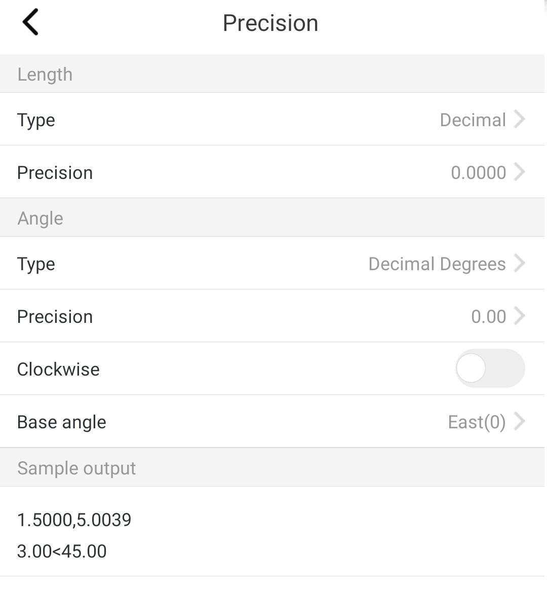

Function entry:
Settings > Precision
Measure Commands > Precision
Precison Settings
It is default to use drawing precision when drawing or measuring.
You could customize the precision, and it could be applied to other drawings.
Length:
The length option provides four types: Decimal, Fractional, Engineering, Scientific.
The supported number of decimal places is 8.
Angle:
The angle option provides four types: Decimal Degrees, Deg/Min/Sec, Grads, Radians, Surveyor’s Units.
The supported number of decimal places is 8.
The default direction is anticlockwise, and it could be switched to clockwise.
The base angle provides five options: East, North, West, South, and Other, which is used for customizing.
Tips:
When entering angle value, only the Decimal Degrees is available.
The number of decimal places is 4 for new created drawings.